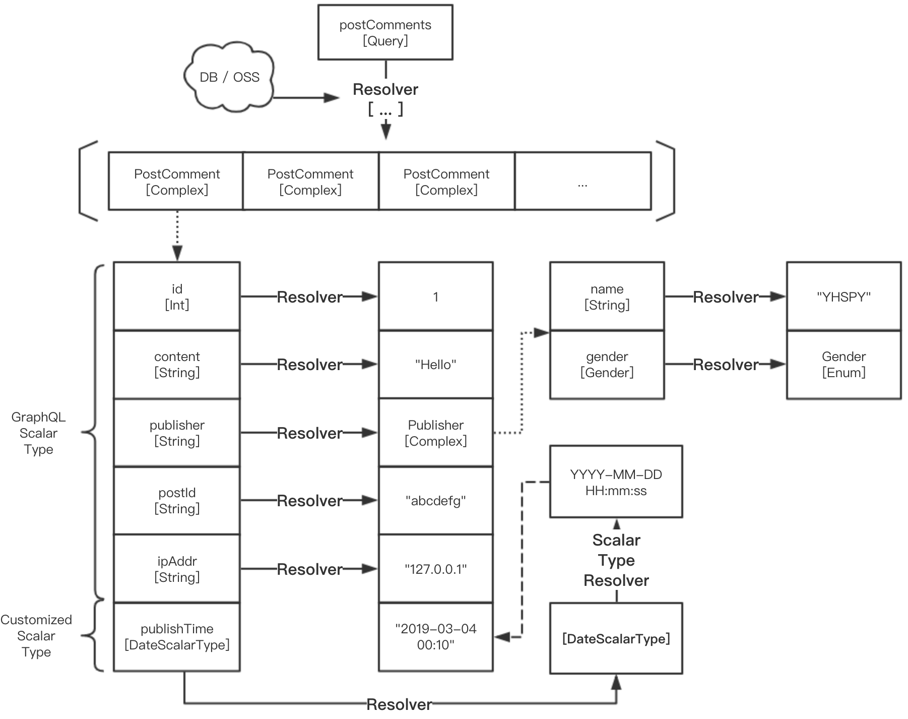

GraphQL 设计艺术
最近一个月做了个重要的决定，将之前用了将近4年的 PHP 博客迁移成了主流的静态博客。但实际上大部分静态博客都是采用 Disque 来从第三方集成评论系统，由于个人觉得 Disque 与新博客的整体风格不搭，并且在国内其加载速度较慢，遂决定自己开发这部分子功能。而后端接口则摒弃了传统的 REST 模式，采用了曾风靡一时的 GraphQL 模式（抽象查询语言）。与 REST 所不同的是，GraphQL 对 API 请求资源的描述采用了更加“细腻”的方式。
设计艺术
先来一段 Facebook 官方对 GraphQL 的定义：
GraphQL 是一个用于 API 的查询语言，是一个使用基于类型系统来执行查询的服务端运行时（类型系统由你的数据定义）。GraphQL 并没有和任何特定数据库或者存储引擎绑定，而是依靠你现有的代码和数据支撑。
接下来用最通俗的语言理解一下 GraphQL。REST 是基于 HTTP 协议的一种 API 架构模式，它使用 HTTP 类型及请求状态来代表对资源的处理方式（动作）以及实际处理结果，通过仅带有名词的 URL 来表示请求的资源类型，因此我们可以说 REST 整体是基于“资源”本身来设计 API 的。同样的，GraphQL 也是一种 API 的架构模式，不过它不仅支持 HTTP 协议，而且它采用特殊的“无环图（DAG）”来描述 API 的请求资源以及服务端所能够提供的资源。首先我们先从服务端所能够提供的资源开始说起。
在 GraphQL 中，服务端采用“类型系统”来描述所能够提供的资源，其中有两种特殊的类型：“Query” 和 “Mutation”。Query 表示查询类型，即客户端可以使用的查询资源；而另一个 Mutation 则表示变更资源，比如创建和删除（这里无法体现是否幂等，不要与 REST 架构混淆）。比如下面这段 Schema 定义：
scalar DateScalarType
input CommentInput {
postId: String!
publisher: String!
content: String!
}
type PostComment {
id: Int!
postId: String!
publisher(id: String): Publisher!
content: String!
ipAddr: String
publishTime: DateScalarType!
}
type Publisher {
name: String!
gender: Gender!
}
enum Gender {
MALE
FEMALE
}
type Query {
postComments(postId: String!): [PostComment]!
}
type Mutation {
insertPostComment(comment: CommentInput!): PostComment!
}在这段 GraphQL 资源描述定义中，可以看到客户端可以使用的后端查询资源有 postComments，请求该资源的返回值是 PostComment 类型的数组（不能为 null）；同理，客户端可用的变更资源为 insertPostComment，该资源在请求成功后会返回类型为 PostComment 的对象资源。而在 PostComment 对象的类型定义中，我们可以看到多个字段，其中有一个字段为我们自定义的常量类型，即 DateScalarType 类型；同样还有名为 Publisher 的自定义复合类型，而其他字段的类型均为 GraphQL 的标准常量类型。因此可以看到，实际上 GraphQL 通过这样一种资源的逐层表示方法，将所有复合（对象）类型均“递归下降解析”到最底层的常量类型（包括自定义常量类型和枚举类型）。每一个复合资源各字段的解析过程都可以对应一个独立的 “Resolver（解析函数）”，顶层解析函数所得到的资源会依次传递给对应的子层类型各字段的解析函数，子层字段继续解析直到最底层所有复合类型全部解析成符合 GraphQL 的标准常量或自定义常量类型。我们可以将上述的资源描述定义代码绘制成下图所示的无向图结构。

在上图中，小虚线的指向代表类型实体的组成关系，即所指向的对象结构可以直接替代箭头起始位置处的资源别名；大虚线表示资源的对应转换规则到资源实体。每一个 Resolver 都可以从任何的数据源来获取数据，或者直接修改从父层级传递过来对应字段的数据。正常来说，我们可以为 GraphQL 所有可用资源的所有层级的每一个字段都设置对应的 Resolver，但实际上在 GraphQL 中，一般有三种情况需要为对应字段设置 Resolver：
- 需要接收参数的字段；
- 自定义标量（Scalar）类型；
- 起始节点的跟字段，即位于 Query 和 Mutation 类型中的资源字段；
而位于其他位置的字段则可根据实际业务需求来选择性地为其添加 Resolver。为什么说 GraphQL 的资源描述可以组成一个 DAG 无环图？这是因为每一个 Resolver 都不能也不应该将某类型字段解析成包含有本类型字段的值，这样由于回环的出现便无法进行“下降”的解析。一个基于 JavaScript 实现的 Resolver 小例子：
Query: {
async postComments(parent, args) {
// fetch data from db;
return await PostComments.findAll({
where: {
postId: args.postId
},
order: [
['publishTime', 'DESC'],
]
});
},
}一旦后端的可用资源“图谱”定义完毕后，我们便可以从前端以类似的方式来请求我们之前定义的这些资源。GraphQL 的重要的特点是：查询和其结果拥有几乎一样的结构。即我们需要用 GraphQL 特有的查询或变更请求语法来描述想要查询或者变更的资源。比如下面这段请求描述代码：
query {
postComments(postId: "${postId}") {
...post
}
}
fragment post on PostComment {
id
publisher {
name
gender
}
content
publishTime
}每一个请求或者变更需求都需要从 “query” 或者 “mutation” 的操作类型开始，不带类型关键字则默认为 “query” 类型。需求可以使用以下三种方式进行描述：
- 无操作类型，无操作名称，无参数；
- 带操作类型，带操作名称，无参数；
- 带操作类型，带操作名称，带参数；
其中第一种方式仅用大括号来包裹资源的请求需求；第二种方式带有“操作名称”，利于追踪 BUG 时进行日志搜索；第三种方式可以将整个需求体作为一个整体，而将频繁变化的入参单独提取出来，便于需求的复用。并且也符合“高内聚，低耦合”的软件设计原则。
在描述前端想要请求的资源实体时，我们可以为其中的每一个字段添加任意的入参，但这也需要同时在后端的“可用资源描述图”中为对应该字段指定入参的类型，并同时添加相应的 Resolver 解析函数。上述资源描述需求在经过后端处理后返回的数据结构如下所示。可以看到其中返回的字段结构和名称与我们在需求描述中给出的结构是一一对应的。要注意的是，某个字段资源返回的是重复的数组结构还是只有一个标量值，取决于后端在“可用资源描述图”中的实际定义方式。
{
"postComments": [
{
"id": 552,
"publisher": {
"name": "YHSPY（博主）",
"gender": "MALE"
},
"content": "评论系统上线啦~~ 欢迎各位客官多多留言交流 ；） 商业评论、技术研究、生活琐事 and 创业思考。",
"publishTime": "2019-03-02 16:57:12"
}
]
}综上，我们可以看到 GraphQL 以更加直观的“图”形式来描述后端的可用资源与前端想要请求的资源需求。相较于 REST 架构，GraphQL 更着重于体现资源的细节和各个资源实体之间的联系，而 REST 则仅体现了对某资源的处理意愿，并没有体现出各资源实体的结构和资源之间的关系。
实践资源
GraphQL 官方给出了多语言版本的后端实现，可以参考 “GraphQL Code” 来查找合适的 GraphQL 后端运行时支持。
前端实现可以直接基于 HTTP 的 GET 请求与 POST 请求来进行，按照合法的参数格式传递“需求描述”代码即可。